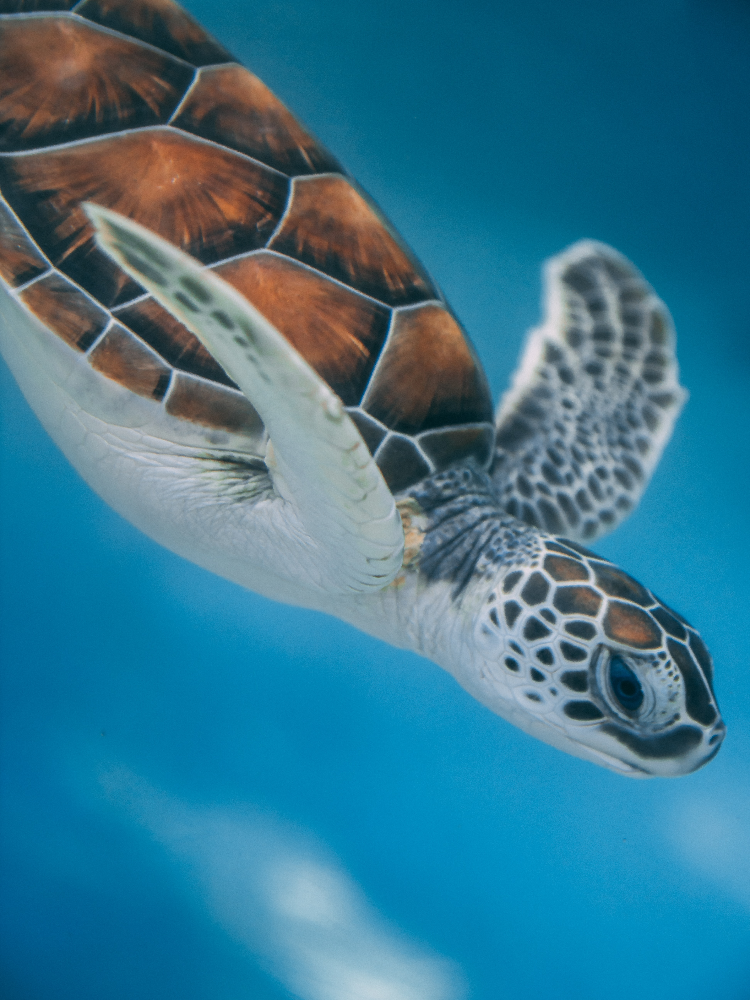

The Hikkaduwa Turtle Hatchery is dedicated to the conservation and protection of sea turtles and their eggs. The hatchery aims to ensure the survival and well-being of sea turtles by collecting and relocating eggs from vulnerable nesting sites to the hatchery, where they are incubated and later released into the ocean.
At the hatchery, the collected turtle eggs are carefully incubated under controlled conditions to maximize the hatching success rate. The staff ensures that the eggs receive the appropriate temperature and humidity levels required for their development.
